About me
PROFESSIONAL PATH
I am a Senior Frontend Developer specializing in building high-performance, dynamic web applications with Next.js, React, and TypeScript. What sets me apart is my comprehensive background in Business Analysis (BA), System Analysis, Project Management, and Scrum leadership. This multi-disciplinary expertise allows me to bridge the gap between complex technical execution and high-level business strategy seamlessly.
I excel at designing scalable front-end architectures, optimizing performance (Core Web Vitals), and mentoring development teams. Beyond writing clean, maintainable code, I deeply understand business requirements, effectively manage project timelines, and foster Agile collaboration to ensure end-to-end product success.
I am always eager to embrace emerging technologies, tackle new business challenges, and drive continuous growth.
Technical Skills
Jest
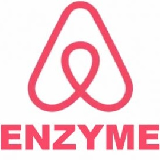
Enzyme

Jira
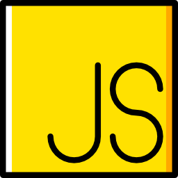
JavaScript
Typescript
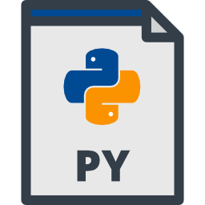
Python
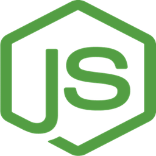
Node.js
PHP
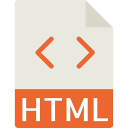
HTML
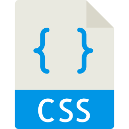
CSS

Jquery
MySQL
PL/SQL
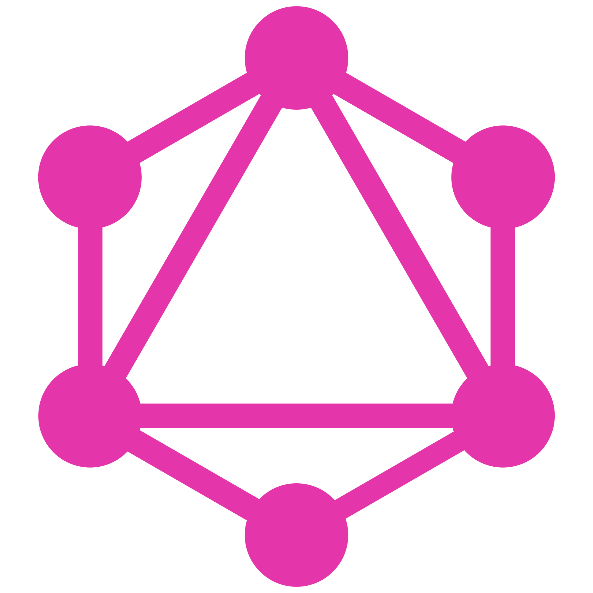
GraphQL
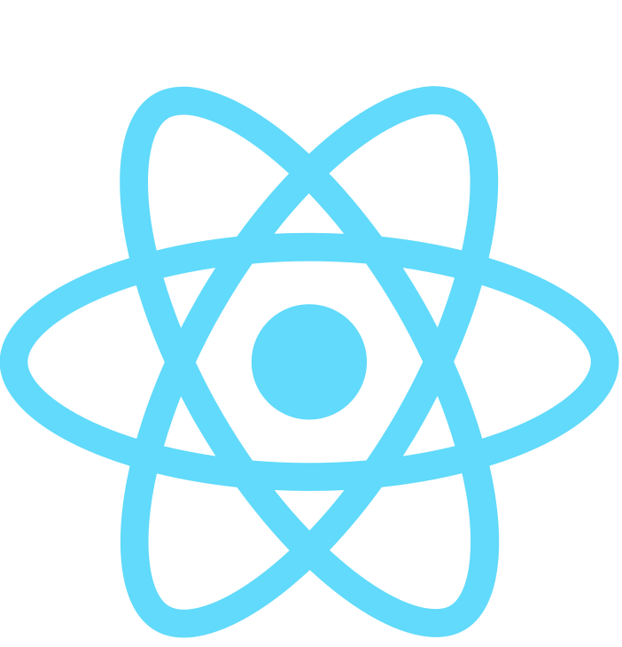
React
Next.js
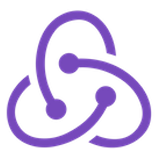
Redux
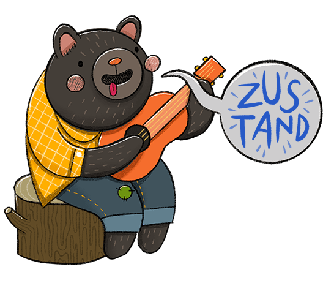
Zustand
CodeIgniter
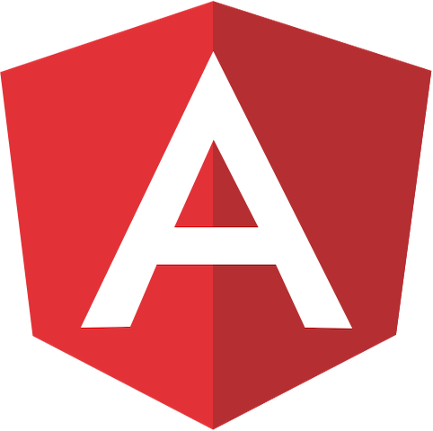
Angular
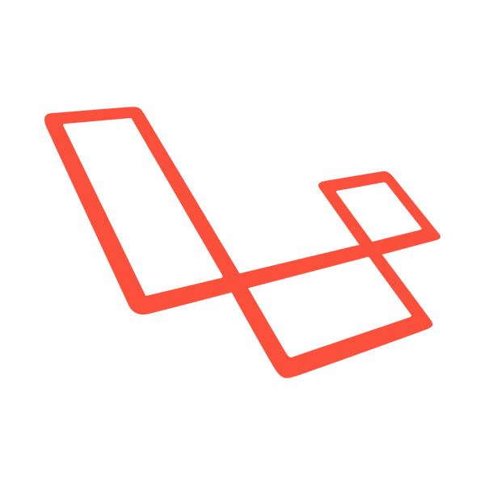
Laravel
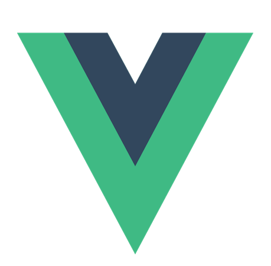
Vue.js
Nuxt
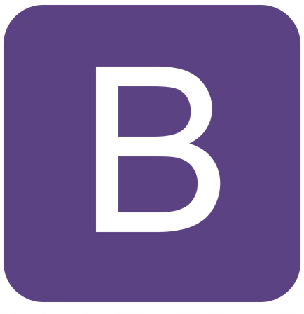
Bootstrap
SemanticUI
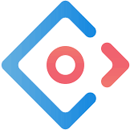
Ant
Elasticsearch
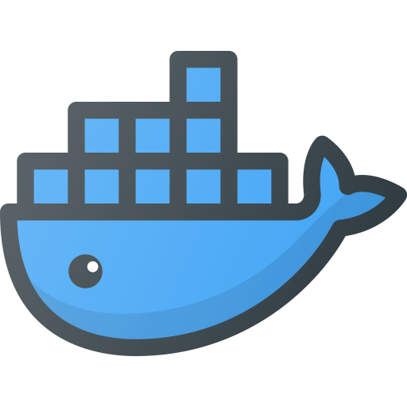
Docker

Neo4j
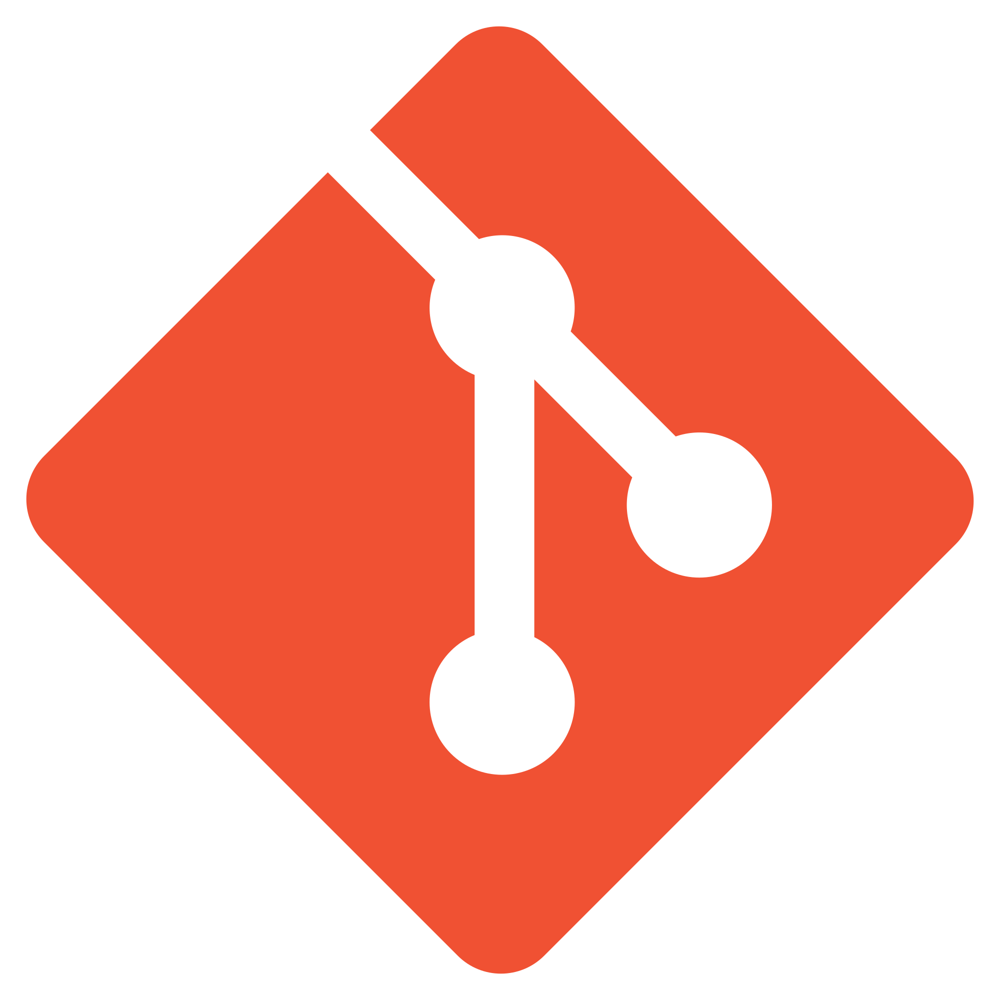
Git
Management & Analysis Skills
- Project Management & Agile: Scrum Master, Agile Methodologies, Resource Allocation, Sprint Planning.
- Business & System Analysis: Requirement Gathering (BRDs, User Stories), Stakeholder Management, System Design.
- Quality Assurance: User Acceptance Testing (UAT) Strategy, Test Scenario Design, Defect Tracking.
- Technical Leadership: Code Review, Mentorship, Tech Stack Selection, System Architecture Planning.
Objective
I am a driven professional seeking new challenges to continuously enhance my technical expertise and leadership capabilities. My ultimate goal is to become a highly effective Project Manager who seamlessly bridges the gap between business objectives and technological execution.
Personality
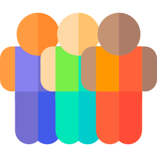
Friendly
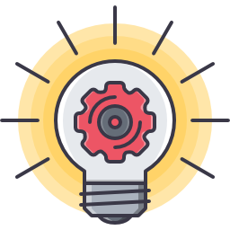
Optimistic
Energetic
Hard working
Motto
"You can't get everything you want at the same time, but you can always do something today to get one step closer to your goals."
Language
Thai
English